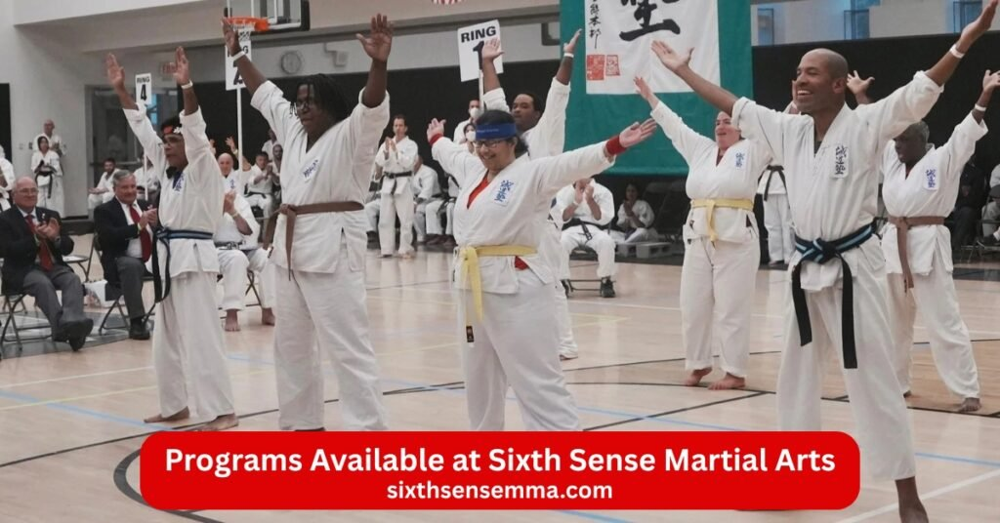

Martial Arts Near Me in Coppell Texas Find the Best Muay Thai Classes
If you are searching for martial arts near me in Coppell Texas you want a place that offers real training and lasting results. Many locals look for martial arts classes near me martial arts training near me or a reliable martial arts school near me. Coppell has good options like a martial arts academy near me martial arts gym near me and martial arts center near me. You can find the best martial arts near me with local martial arts classes and martial arts lessons near me.
Top Martial Arts Classes Near Me Local Options in Coppell Texas
Many people search for martial arts near me when they want martial arts classes near me or martial arts training near me. Coppell offers several solid places like a martial arts school near me martial arts academy near me martial arts gym near me and martial arts center near me. You can find the best martial arts near me with local martial arts classes and martial arts lessons near me. Options include self defense classes near me kids martial arts near me adult martial arts classes near me and beginner martial arts near me.
How Do I Find the Best Martial Arts Schools in My Area?
Start by thinking about your goals. Do you want to learn self defense get in shape or build discipline and fitness? Search for a martial arts school or best martial arts options close by. Look at what styles they teach such as karate jiu jitsu krav maga or kickboxing. Check if they have a martial arts program for your age group. Read about the instructor and experienced martial artists who teach there. Visit the martial arts school near you to see the classes.
What Are the Different Types of Martial Arts I Can Learn Nearby?
Coppell offers many styles.Brazilian jiu jitsu teaches ground skills and self defense techniques. Muay Thai and kickboxing focus on striking for fitness goals. Krav maga classes provide krav maga self defense. Some gyms mix styles in mixed martial training. You can learn martial arts techniques from experienced martial artists. Programs include karate and jiu jitsu programs. Teens enjoy teen martial arts or teen martial arts classes.
Can Someone Recommend Good Martial Arts Classes for Beginners?
Yes. Places like Sixth Sense Martial Arts welcome those with no martial arts experience. They offer classes for beginner martial arts near me. You start with basics in a comfortable and welcoming atmosphere. The instructor guides you step by step. Many students begin as young as 5 years old or 4 week trials help you try it. Beginners learn practical self defense training and martial arts techniques. Schools provide a welcoming atmosphere for all students.
What Should I Consider When Choosing a Martial Arts School Near Me?
Look at the location and schedule first. Find a spot easy to reach for regular martial arts training. Check the styles and if they match your needs like choices for self defense or great choices for self defense. See if they have programs for kids martial arts program or adult martial arts classes. Think about the instructor and if they help all experience levels. A good school teaches life skills along with skills. Look for self defense classes that help you protect themselves with self defense.
Overview of Muay Thai Options in Coppell Texas
People looking for martial arts near me in Coppell Texas often discover a mix of gyms that teach Muay Thai. This striking style stands out for its use of punches kicks elbows and knees. Local spots provide martial arts classes near me focused on this art. Sixth Sense Martial Arts sits right in Coppell and includes Muay Thai in its lineup. They call it a devastatingly effective striking art that builds power and precision.Other places nearby offer strong programs too.
Popular Nearby Striking Focused Gyms
Striking fans in Coppell turn to dedicated spots. George Prevalsky’s Boxing & Muay Thai Boxing Club leads the list with authentic classes. Students praise the sweat and technique work there. It serves areas like Irving and Valley Ranch but stays close for Coppell locals.Outlaw Muay Thai and Saekson Janjira Muay Thai draw people who want traditional training. Rojas Muay Thai also earns mentions for solid sessions. These martial arts gyms near me emphasize kicks knees and clinch work.
Hybrid MMA Academies Offering Muay Thai
Many in Coppell choose places that mix Muay Thai with other styles. Gracie Barra combines it with Brazilian Jiu Jitsu for balanced skills. Mohler MMA and Hicks MMA include striking in their MMA programs. These martial arts academies near me create well rounded fighters.Sixth Sense Martial Arts fits this category perfectly. They pair Muay Thai with BJJ for complete training. This hybrid approach teaches you to strike and grapple effectively.
Benefits of Muay Thai Training by Sixth Sense
Sixth Sense Martial Arts delivers Muay Thai that changes lives. Their program goes beyond basic workouts. Students gain strength and smarts on the mat.
Physical Fitness and Conditioning
Classes at Sixth Sense push your body hard. You build incredible shape through pads bags and drills. This martial arts training torches calories and tones muscles. Many adults join for fitness goals and leave stronger. The “Art of Eight Limbs” demands full effort so you improve cardio and power quickly.
Self Defense Skills
Muay Thai from Sixth Sense teaches practical ways to protect yourself. You learn strikes that work in real situations. Knees elbows and clinch control give strong self defense skills. Beginners start safe and progress to effective self defense techniques. This builds ability to protect themselves with self defense.
Mental and Emotional Growth
Training here sharpens your mind too. You develop calm under pressure and quick decisions. Many students become more confident in daily life. The supportive space helps with stress relief and focus. Kids and adults both gain life skills like discipline. This martial arts journey creates emotional strength alongside physical gains.
Why Sixth Sense Martial Arts Stands Out for Muay Thai
Many people search for martial arts near me in Coppell and find several options for martial arts classes near me. Sixth Sense Martial Arts rises above the rest with its focus on quality Muay Thai. This martial arts school near me teaches the real “Art of Eight Limbs” in a modern space. Students enjoy martial arts training near me that builds power and precision. The gym earns praise for its clean facility and skilled team.
Authentic Muay Thai Techniques
Sixth Sense stays true to traditional strikes. You learn punches kicks elbows knees and clinch work just like in Thailand. Coach Anthony brings strong knowledge to every session. This approach helps you master self defense techniques that work in real life. Many members start with no martial arts experience and quickly feel the difference.
Classes for All Levels: Beginners to Advanced
Everyone fits in here regardless of experience levels. True beginners get patient guidance on basics. Advanced students push with sparring and drills. Classes suit kids martial arts near me teens and adult martial arts classes near me. You progress at your pace in a welcoming atmosphere. This makes it one of the best martial arts near me for steady growth.
Small Group Training for Personalized Attention
Sessions stay small so the instructor sees every move. You receive direct feedback to fix form fast. This hands on style speeds up learning of martial arts techniques. Members often become more confident quicker than in crowded spots. The setup creates a comfortable and welcoming atmosphere where questions flow freely.
Combination with Brazilian Jiu Jitsu for Complete Skills
Sixth Sense pairs Muay Thai with BJJ for full coverage. You gain striking power plus ground control. This hybrid builds self defense skills no single style matches. Many choose it for great choices for self defense. Students learn to handle any situation and protect themselves with self defense. The blend helps reach fitness goals while growing as a martial artist. This complete martial arts program sets it apart in Coppell.

Programs Available at Sixth Sense Martial Arts
Sixth Sense Martial Arts in Coppell offers a range of martial arts classes near me that suit different ages and goals. People searching for martial arts near me find solid options here. The martial arts school near me runs daily sessions in striking and grappling. This martial arts academy near me welcomes everyone from complete beginners to experienced martial artists. Programs focus on self defense skills and discipline and fitness.
Muay Thai for Adults
Adults love the Muay Thai classes at Sixth Sense. This adult martial arts program teaches the full “Art of Eight Limbs” with punches kicks elbows and knees. Sessions build incredible conditioning and power. Many join for fitness goals and stay for the real self defense techniques. Classes fit busy schedules and run in small groups. The instructor gives clear guidance so you improve fast. This stands out among adult martial arts classes near me because it delivers authentic strikes in a supportive space.
Brazilian Jiu Jitsu Classes
Brazilian jiu jitsu forms the core of many schedules here. These classes teach ground control submissions and smart positioning. Students of all experience levels start with fundamentals and move to advanced rolls. BJJ complements Muay Thai perfectly for complete self defense skills. Many adults choose this martial arts training near me to build strategic thinking and resilience. The welcoming atmosphere helps beginners feel comfortable right away.
Kids and Teens Programs
Sixth Sense runs strong kids martial arts near me and teen martial arts classes. Children from 5 years old join anti bullying sessions that teach assertiveness and respect. The kids martial arts program mixes fun drills with serious self defense training. Teens get age specific classes in striking and grappling. These build discipline and fitness while helping them become more confident. Parents notice changes in focus and behavior.
Upcoming Women’s Self Defense
The new women’s self defense classes will launch soon at Sixth Sense. This program helps women set boundaries and handle threats effectively. It draws from Muay Thai and BJJ for practical moves. Ladies of any fitness level can join to gain strength and peace of mind. The classes create a safe space to learn practical self defense skills. Many look forward to this addition among self defense classes near me.
Who Can Learn Muay Thai at Sixth Sense Martial Arts?
Anyone searching for martial arts near me in Coppell can start Muay Thai at Sixth Sense Martial Arts. This martial arts school near me opens its doors to all experience levels. The martial arts academy near me creates a space where every person fits in. You do not need prior martial arts experience to join martial arts classes near me. The instructor team guides each student based on individual needs. Programs help with fitness goals self defense skills and personal growth.
Complete Beginners with No Prior Experience
Many new members arrive with zero background in any martial art. Sixth Sense welcomes these beginner martial arts near me seekers warmly. Classes start with basic stance punches and kicks. You learn step by step in a welcoming atmosphere. The small groups allow the instructor to focus on proper form from day one. Beginners quickly become more confident as they master simple martial arts techniques. This safe start helps you build a strong foundation without feeling lost.
Adults Seeking Fitness and Stress Relief
Busy adults often choose Muay Thai for adult martial arts classes near me. The intense workouts help you get in shape and release daily tension. Sessions combine cardio strength and striking drills. Many join to improve discipline and fitness while learning self defense techniques. The comfortable and welcoming atmosphere lets you train hard and unwind. Adults leave class feeling energized and calmer. This adult martial arts program supports fitness goals alongside practical skills.
Kids and Teens Building Confidence and Discipline
Parents searching for kids martial arts near me find strong options here. Children and teen martial arts classes teach respect focus and resilience. The kids martial arts program mixes fun games with real Muay Thai moves. Young students learn to handle challenges on and off the mat. Teens gain life skills through structured training. Both age groups develop self defense skills in a positive setting. Many families notice improved behavior and self assurance at home and school.
Women Looking for Empowerment and Self Defense
Women of all ages join to gain strength and security. The classes teach powerful strikes and clinch work for real situations. Many seek self defense classes near me to learn practical self defense skills. Training helps women set boundaries and move with assurance. The supportive space encourages growth without judgment. Upcoming dedicated sessions will expand these great choices for self defense. Participants often protect themselves with self defense knowledge that lasts a lifetime.
Experienced Practitioners Wanting to Advance Skills
Seasoned martial artist members come to sharpen their game. Advanced classes include heavy sparring timing drills and strategy. Experienced martial artists appreciate the authentic style and detailed feedback. You can combine Muay Thai with BJJ for deeper understanding. This pushes self defense training to higher levels. The program challenges those aiming for competition or mastery. Even with years of martial arts training near me students find room to grow and refine their craft.
Why Sixth Sense Martial Arts is Better Than Other Gyms in Coppell
Residents who search for martial arts near me in Coppell have several choices for martial arts classes near me. Places like Gracie Barra and Mohler MMA offer solid martial arts training near me. Championship Martial Arts focuses on taekwondo while others teach kickboxing or krav maga. Yet Sixth Sense Martial Arts stands out as the best martial arts near me for many reasons. This martial arts school near me combines quality instruction with real results.
Authentic and Complete Martial Arts Training (Muay Thai + BJJ)
Sixth Sense delivers true Muay Thai and Brazilian jiu jitsu without shortcuts. You learn full martial arts techniques from strikes to submissions. Other gyms might specialize in one style or dilute the curriculum. Here the hybrid approach creates great choices for self defense. Members gain skills to handle standing fights and ground situations. This complete martial arts program builds well rounded self defense skills. Many experienced martial artists choose it over single style spots for deeper growth.
Truly Beginner Friendly and Inclusive for Everyone
Newcomers feel at home right away in this martial arts academy near me. The team supports all experience levels and ages. No one gets left behind unlike in some larger martial arts gyms near me. Classes welcome kids martial arts near me teen martial arts and adult martial arts classes near me. The comfortable and welcoming atmosphere suits families and individuals. Everyone from 5 years old to adults progresses comfortably. This inclusivity helps students become more confident faster.
Small Group Classes with Personalized Coach Attention
Sessions stay small so the instructor watches every detail. You get direct corrections and tips tailored to you. Bigger gyms often pack classes leaving little individual help. At Sixth Sense this personal touch speeds up learning of self defense techniques. Members master moves quicker and avoid bad habits. The setup creates a welcoming atmosphere for all students where progress feels real.
Strong Focus on Confidence Empowerment and Life Skills
Training goes beyond kicks and grapples here. Classes build inner strength and smart decisions. Many students gain life skills like discipline and resilience. The program emphasizes empowerment for women kids and adults. Parents see children protect themselves with self defense knowledge and better behavior. Adults reach fitness goals while handling stress.
Why Choose Sixth Sense Martial Arts for Muay Thai in Coppell?
People typing martial arts near me into search often land on many martial arts classes near me in Coppell. Options include spots for taekwondo karate kickboxing and krav maga classes. Yet Sixth Sense Martial Arts becomes the clear pick for Muay Thai training. This martial arts school near me sits right in Coppell at a convenient spot. The martial arts academy near me provides local martial arts classes that blend real striking with practical skills.
Expert Coaching with Personalized Attention in Small Groups
The instructor team at Sixth Sense brings deep knowledge to every class. Coach Anthony leads with clear teaching of martial arts techniques. Small groups mean you get direct fixes and advice. This beats crowded martial arts gyms near me where personal help stays limited. Members learn proper form faster and build self defense techniques safely. The setup creates a welcoming atmosphere for all students and helps everyone progress steadily.
Comprehensive Programs Combining Muay Thai and BJJ
Sixth Sense offers full programs that mix Muay Thai and Brazilian jiu jitsu. You master strikes on your feet and control on the ground. This martial arts program covers all ranges for excellent choices for self defense. Many martial arts training near me spots focus on one area only. Here the combination builds complete self defense skills.
Inclusive and Supportive Community for All Ages and Levels
The space welcomes every person no matter age or background. Kids martial arts near me run alongside teen martial arts and adult martial arts. Classes suit experience levels from zero to advanced. Families train together in this family martial arts setting. The comfortable and welcoming atmosphere encourages support among members.
Proven Results in Building Confidence Fitness and Self Defense Skills
Members see real changes through consistent training. Many get in shape with intense sessions and better eating habits. Kids gain life skills and handle bullying better. Women learn to protect themselves with self defense effectively. Adults reduce stress and sharpen focus. Testimonials show growth in strength and mindset. This martial arts journey delivers lasting discipline and fitness. Parents notice improved behavior.
Contact Us
Have any questions about martial arts near me in Coppell, like whether kidney shots are allowed in Muay Thai, need a fight moment explained, or want to understand UFC and striking rules? Just send us a message or give us a call we reply fast and keep it simple at Sixth Sense Martial Arts!
- Phone 469 972 7800
- Email: info@sixthsensemma.com
- Location: 817 S MacArthur Blvd #100 Coppell TX 75019 United States
Concluson
Searching for martial arts near me in Coppell leads many to discover the real value of consistent training. You now know the options for martial arts classes near me and martial arts training near me. Local spots offer taekwondo karate kickboxing and krav maga but Sixth Sense Martial Arts provides something special. This martial arts school near me combines authentic Muay Thai with Brazilian jiu jitsu in a welcoming atmosphere.
Follow Us on Social Media
Stay connected with Sixth Sense MMA through our social media channels. Follow us for class updates, training tips, and a closer look at our self defense community.
FAQ’s
Sixth Sense Martial Arts offers top-rated Muay Thai and Brazilian Jiu-Jitsu classes right in Coppell. Many locals choose it for authentic training and small groups.
Search for places with experienced instructors, positive reviews, and a welcoming atmosphere. Visit Sixth Sense Martial Arts to watch a class and see the difference.
Yes, Sixth Sense Martial Arts welcomes complete beginners with no prior experience. Classes start with basics and progress at your pace.
You can learn Muay Thai, Brazilian Jiu-Jitsu, and soon women’s self-defense at Sixth Sense. Nearby spots offer taekwondo, karate, and kickboxing too.
Sixth Sense has strong programs for kids starting from age 5. They focus on anti-bullying, confidence, and discipline through fun drills.
Adults train in Muay Thai and BJJ at Sixth Sense Martial Arts. Sessions help with fitness, stress relief, and practical self-defense.
Muay Thai teaches powerful strikes, knees, elbows, and clinch work. At Sixth Sense, it combines with BJJ for complete real-world self-defense skills.
Sixth Sense offers competitive pricing and trial options. Many members find it affordable compared to larger gyms in the area.
Absolutely. Sixth Sense is inclusive for all women and has an upcoming dedicated women’s self-defense program for empowerment and boundary-setting.
Contact Sixth Sense Martial Arts for a free trial or introductory class. They make starting easy with small groups and supportive coaching.
Train with us in Coppell
The first class is free. Shorts, a t-shirt and a water bottle. We lend the rest.
Book a free class